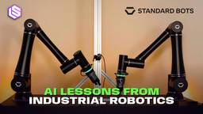
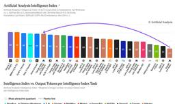

Latent.Space
https://www.latent.space
The AI Engineer newsletter + Top technical AI podcast. How leading labs build Agents, Models, Infra, & AI for Science. See https://latent.space/about for highlights from Greg Brockman, Andrej Karpathy, George Hotz, Simon Willison, Soumith Chintala et al! Click to read Latent.Space, a Substack publication with hundreds of thousands of subscribers.
フィード

Building AI for Reliable Execution: Lessons From Industrial Robotics
Latent.Space
Inside Standard Bots’ AI stack, pretrained models learn factory tasks from demonstrations and improve through corrections from real deployments.
5時間前
Why AlphaFold Didn't Solve Protein Folding — Pushmeet Kohli, Google DeepMind & Sal Candido, Biohub
Latent.Space
From the Bitter Lesson of AI scaling to the unsolved mysteries of protein folding, Google DeepMind’s Pushmeet Kohli and Biohub’s Sal Candido are rethinking what it takes to build AI that truly understands biology.
19時間前
Synthesis Superintelligence: from Semiconductors to Superconductors — Periodic Labs’ Liam Fedus and Ekin Dogus Cubuk
Latent.Space
A special Science pod and Engineering pod crossover.. with Forward Deployed Engineering kicker!
2日前

[AINews] Claude Haiku 5.5 — better than GPT-6 Luna at the same pricing
Latent.Space
yay small models
2日前
Can a Cloud-Native Harness Make Agents Reliable Beyond the Desktop?
Latent.Space
Kubernetes co-creators Craig McLuckie and Joe Beda aim to bring agent harnesses fully into the cloud.
3日前
[AINews] Reflection Beam - 501B-A23B American Open Model
Latent.Space
A small win for US open source
5日前

Inside-Out AI: Rebuilding Airbnb Behind the Scenes and Across the Guest Experience
Latent.Space
After leading Meta’s Llama models, Ahmad Al-Dahle is now transforming Airbnb with AI — from how its teams develop products to how it serves guests.
8日前
[AINews] Pi 1.0, Pi Durable, and AIE NYC
Latent.Space
the minimalist harness goes stable... and TypeScript!
9日前
Academia is for Ambition — Alex Zhang, MIT
Latent.Space
We catch up with RLM first author Alex Zhang, MIT PhD, on Jev, PhD masxing, and the future of harnesses.
9日前
[AINews] Gemini 4 Argon: GDM’s answer to Astra/Fable, with 1M output
Latent.Space
... but you can’t try it yet unless you are “government users and trusted cyber defenders in the Fairwind Program”
10日前
Why Dwarkesh is Wrong about Computer Use + How OpenAI shipped its Jev competitor in 1 Week
Latent.Space
Our DevDay coverage - the first pod on the DevDay lineup - dives in with the leaders of OpenAI’s CUA team and API platform.
10日前
[AINews] OpenAI DevDay 2026: Dots, 6.1 Sol, Ultrafast, Decisions API, Agents API, Spaces, Marketplace, and 1.2 Billion ChatGPT WAU
Latent.Space
the most confident DevDay yet.
11日前
[AINews] AMD buys World Labs for $8.2B, as Atlas solves sparse reconstruction problem for robotics, design and more
Latent.Space
Congrats team!
12日前
Claude Code’s Next Era — Thariq Shihipar, Anthropic
Latent.Space
Shipping Opus/Sonnet 5.5, Mods, Plugins, Projects, Tag while Pacing the Frontier
12日前
OpenRouter: from Seed to Stripe — with OpenRouter’s Alex Atallah & AMP’s Anjney Midha
Latent.Space
In 2023 most people doubted that there could be more than 1 or 2 frontier model labs. Now there are dozens.... and Stripe just bought the best known one for $7B.
15日前